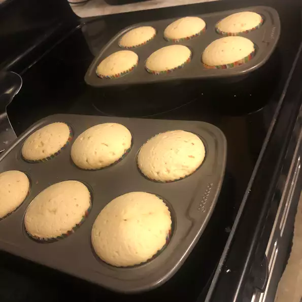

Vanilla Cupcakes

If you are a fan of Chai tea and Chai lattes, this is a way to incorporate those flavors into your sweets.
Ingredients
- ⅔ cup butter, softened
- ¾ cup superfine sugar
- 1 ½ cups self-rising flour
- 3 eggs
- 1 teaspoon vanilla extract
Steps
- Preheat oven to 350 degrees F (175 degrees C). Grease a 12 cup muffin pan or line with paper baking cups.
- In a large bowl, mix butter and sugar with an electric mixer until light and fluffy, about 5 minutes. Stir in the eggs, one at a time, blending well after each one. Stir in the vanilla and flour just until mixed. Spoon the batter into the prepared cups, dividing evenly.
- Bake in the preheated oven until the tops spring back when lightly pressed, 18 to 20 minutes. Cool in the pan set over a wire rack. When cool, arrange the cupcakes on a serving platter.
Return to home page